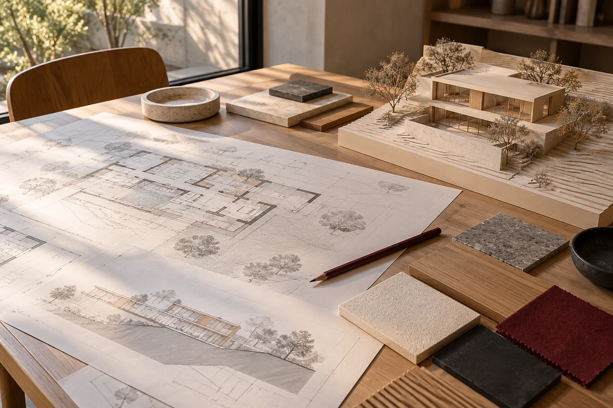
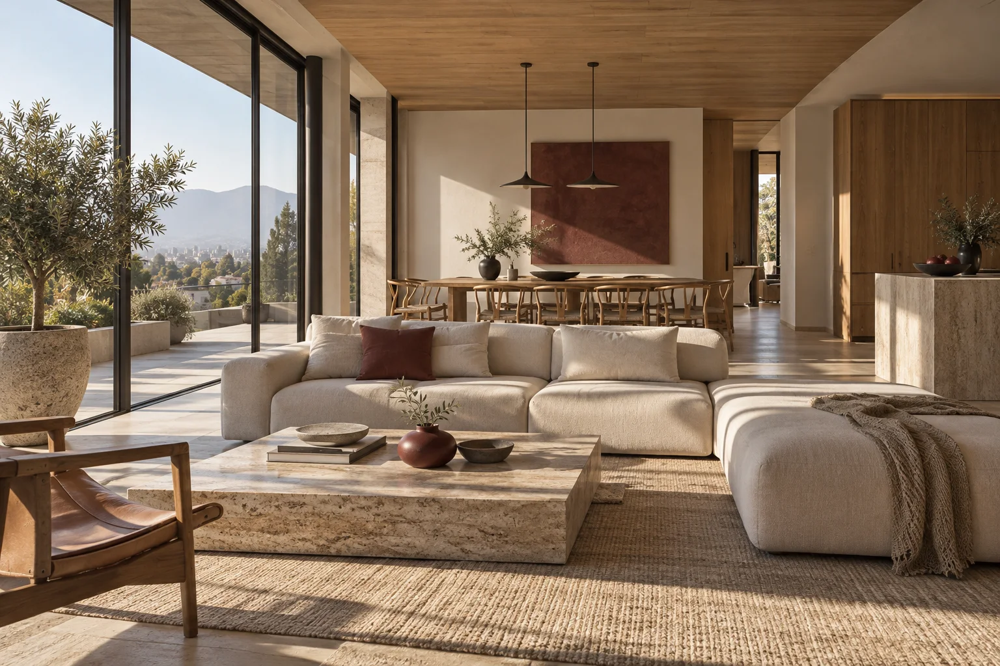
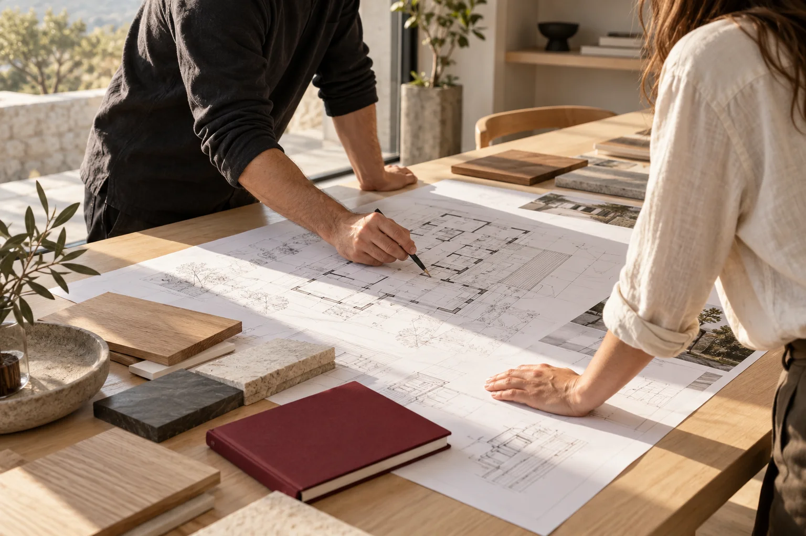
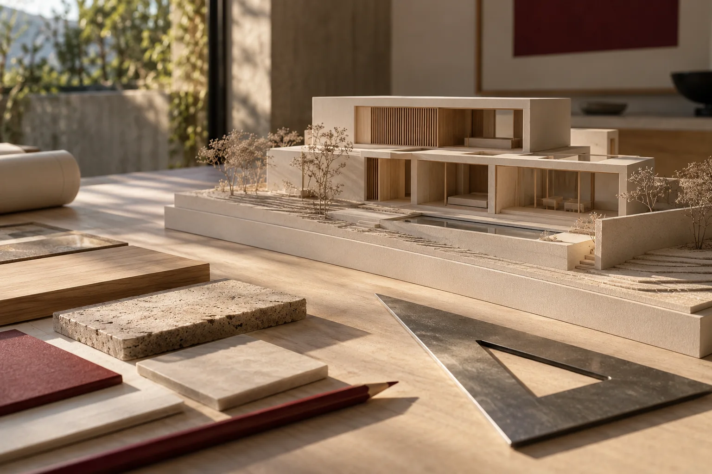

Proyecta una vivienda nueva o una ampliación pensada para tu forma de vivir.
Diseño de obra nueva, obra menor y ampliaciones. Inspección técnica de obra según el servicio acordado.
Cotiza tu proyectoImagen conceptual

SAN MIGUEL, SANTIAGO
Arquitectura, interiorismo y asesoría técnica desde San Miguel. Cuéntanos tu idea y conversemos sobre el siguiente paso.
Cotiza tu proyectoDiseño personalizado
Trabajo multidisciplinario
★★★★★ 5,0 en Google · 23 opiniones

Proyecta una vivienda nueva o una ampliación pensada para tu forma de vivir.
Diseño de obra nueva, obra menor y ampliaciones. Inspección técnica de obra según el servicio acordado.
Cotiza tu proyectoImagen conceptual

Conoce qué antecedentes necesita tu propiedad para avanzar en su regularización.
Viviendas, obras comerciales e industriales. Revisión de antecedentes, documentación y gestión según cada caso.
Cotiza tu proyectoImagen conceptual
Replantea tu ambiente con distribución y mobiliario que se adapten a ti.
Interiorismo, asesoramiento y diseño de mobiliario. Ejecución según el alcance del proyecto.
Cotiza tu proyectoImagen conceptual

Ve y comunica tu idea antes de construir, con planos, modelos y renders.
Dibujo técnico, modelado, renders, recorridos y fotomontajes para presentar tu proyecto.
Cotiza tu proyectoImagen conceptual
“Excelente equipo de trabajo!!!”
“es una empresa responsable y confiables”
“Excelentes profesionales, con conocimientos técnicos de buen nivel”
Nos ponemos en contacto contigo y agendamos una cita previa de reconocimiento. Se programarán los pasos a seguir.
Mediante citas programadas, se irán trabajando las ideas conversadas entre cliente y profesional, para armar el proyecto mediante las distintas herramientas del diseño.
Resultado mediante el cual, a través de las correcciones entre cliente y profesional, se logra el objetivo deseado, cerrando la etapa de ajustes.
Documentación necesaria y solicitada del proyecto completo y definido, para su ejecución.
Experiencia en regularizaciones
Una casa nueva o una ampliación, pensada para tu día a día, tus necesidades y tu presupuesto.
Casas, cabañas o módulos para desarrollar tu idea de negocio.
Una segunda casa en la playa, el campo o la montaña, para disfrutar tu tiempo libre.
Una conversación con el arquitecto para resolver dudas y encaminar tu idea.
Desde San Miguel, Estudio 105 reúne diseño arquitectónico, regularización, interiorismo y visualización 3D para dar forma a tu proyecto.
Una ampliación, un nuevo ambiente o los planos de una idea: el primer paso es entender lo que necesitas y definir el alcance de la asesoría.
Sí. Elige «Necesito orientación» en el formulario y cuenta qué te gustaría resolver. Puede ser una vivienda, una ampliación, un ambiente o una idea que quieras visualizar.
El estudio ofrece regularización de propiedades. La viabilidad y el procedimiento deben evaluarse según los antecedentes de tu caso.
El presupuesto depende del servicio, las dimensiones del espacio y el alcance del trabajo. Comparte tu idea y los antecedentes disponibles para conversar sobre tu caso.
Real Audiencia 1229, San Miguel, Santiago. Lunes a viernes de 09:00 a 13:00 y de 14:00 a 16:00; confirma la atención en feriados.
Cuéntanos tu idea y continúa por WhatsApp.
Lunes a viernes
09:00 a 13:00 y 14:00 a 16:00
Sábados y domingos cerrado.
Los horarios pueden variar en feriados.
Escríbenos antes de tu visita para coordinar la atención.
Real Audiencia 1229 · San Miguel, Santiago